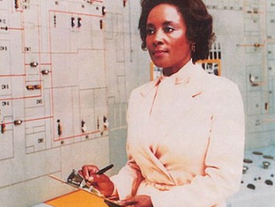

MUJERES
PIONERAS
Dentro de todas las mujeres que han dedicado su vida a la ciencia y sus distintas ramas, éstas 9 científicas se destacan por haber sido las primeras en ganar premios o realizar aportes importantes.
Ellen Swallow Richards
(1842-1911)
Considerada como una de las fundadoras de la ecología y la ingeniería ambiental
Diseñó para su propio hogar un sistema de calefacción y ventilación no contaminante. Puso en marcha en el prestigioso MIT un laboratorio de ciencias dedicado exclusivamente a mujeres y montó el primer laboratorio del mundo en el que se aplicaban tratamientos de purificación de aguas.
Hedy Lamarr
(1914-2000)
Actriz e inventora
Inventó - junto al compositor George Antheil- una primera versión del espectro ensanchado (técnica de modulación empleada en telecomunicaciones)
En algunos países, como Alemania o Austria, el Día del/la inventor/a se celebra cada 9 de noviembre en su honor por ser el día de su nacimiento.

Patricia Bath
(1942-2019)
Médica e inventora
Fue la primera mujer afroamericana en recibir una patente con finalidades médicas. Su Laserphaco Probe se utiliza para el tratamiento de cataratas. Fue la primera mujer miembro del Instituto del ojo Jules Stein, primera mujer en dirigir un programa de posgrado en oftalmología, y primera mujer elegida empleada honoraria del Centro Médico UCLA.
Maria Mitchell
(1818-1889)
Astrónoma
Se la considera la primera astrónoma académica de Estados Unidos y es una referencia para la ciencia de ese país.Descubrió el cometa Mitchell y colaboró con el United States Naval Observatory, calculando tablas sobre la posición de Venus.
Katia Krafft
(1942-1991)
Vulcanóloga
Fue pionera en fotografiar y filmar volcanes junto a su marido, el vulcanólogo Maurice Krafft, en muchas ocasiones a poca distancia de la lava. Sus reportajes gráficos ayudaron en algunas ocasiones a las autoridades locales a convencer a la población de la necesidad de evacuar algunas zonas.
Maryam Mirzakhani
(1977-2017)
Matemática
Fue la primer mujer galardonada con la Medalla Fields, el premio más prestigioso en matemáticas. Destaca en una amplia gama de técnicas y áreas de las matemáticas. Utilizando principios de diversos campos, ha conseguido un nuevo nivel de comprensión en un área de las matemáticas llamada topología de baja dimensión.
Tessy Thomas
(1963-Actualidad)
Científica
Es la primera mujer científica en encabezar un proyecto de misiles en la India. Es directora general de sistemas aeronáuticos y exdirectora de proyectos del misil Agni-IV en la Organización de Investigación y Desarrollo de Defensa. Recibió el Premio Nacional Lal Bahadur Shastri por su contribución para lograr que la India sea autosuficiente en el campo de la tecnología de misiles .
Nettie Stevens
(1861-1912)
Genetista
Junto a Edmund Beecher Wilson fueron los primeros investigadores en describir las bases cromosómicas del sexo; la científica demostró que el sexo de un ser vivo depende un cromosoma particular. Realizó importantes contribuciones en los campos de la embriología y citogenética
Daphne Oram
(1925-2003)
Ingeniera de sonido y compositora
Pionera de la música electrónica, fue la autora de Still Point, de 1949, considerada como la primera obra que manipula sonidos electrónicos en tiempo real.Sin embargo, aunque contribuyó a revolucionar la música, apenas recientemente que su trabajo ha recibido amplio reconocimiento en iniciativas como la obra de teatro Daphne Oram's Wonderful World of Sound
Científicas
LATINOAMERICANAS
{kind=link}
{kind=link}
{kind=link}
{kind=link}
{kind=link}
Brecha de genero en STEM
La participación de las mujeres en los campos relacionados con las Tecnologías de la Información y la Comunicación (TIC) es particularmente bajo. Los datos entre 2014 y 2016 de la Unesco muestran que, a nivel global, solo el 3% de quienes estudian carreras afines a esta área son mujeres. En otras disciplinas como ciencias naturales, matemáticas o estadística la representación de ellas apenas alcanza el 5%.
Además, los Premios Nobel en Química, Física, Fisiología y Medicina han sido obtenidos por 599 hombres, frente a las 17 mujeres que lo han logrado.
Mujeres en
distintas disciplinas
-
Vera Rubin
AstrónomaFue pionera en la medición de la rotación de las estrellas dentro de una galaxia. Sus mediciones pusieron de manifiesto que las curvas de rotación galácticas se mantenían planas, contradiciendo el modelo teórico, siendo la evidencia más directa y robusta de la existencia de materia oscura
-
Sandra Faber
Física y doctora en astronomíaSe dedica al estudio de la formación y evolución de las galaxias, y de la evolución de la estructura del universo, además trabaja como profesora Universitaria en Astronomía. Es coautora de la relación Faber-Jackson.
-

Hipatia de Alejandria
Filósofa y maestra neoplatónicaDestacó en los campos de las matemáticas y la astronomía, fue una de las primeras mujeres matemáticas de la historia. Escribió sobre geometría, álgebra y astronomía, mejoró el diseño de los primitivos astrolabios (instrumentos para determinar las posiciones de las estrellas sobre la bóveda celeste)
-
Marie Curie
CientíficaPionera en el campo de la radiactividad, fue la primera persona en recibir dos premios Nobel en distintas especialidades (Física y Química) y la primera mujer en ocupar el puesto de profesora en la Universidad de París.
-
Rosalind Franklin
Química y cristalógrafaFue responsable de contribuciones imprescindibles para la comprensión de la estructura del ADN (las imágenes por difracción de rayos X que revelaron la forma de doble hélice de esta molécula son de su autoría), del ARN, de los virus, del carbón y del grafito.
-
Elizabeth Blackburn
BioquímicaDescubrió de la telomerasa, una enzima que forma los telómeros durante la duplicación del ADN. En 2009, recibió el Premio Nobel de Medicina.
-
Valentina Tereshkova
Cosmonauta, política rusa e ingenieraSe convirtió en la primera mujer en ir al espacio. Completó 48 órbitas alrededor de la Tierra en sus tres días en el espacio extraterrestre, fue incorporada de manera honoraria a la Fuerza Aérea Soviética, siendo así la primera civil en volar al espacio.
-

Mary Jackson
Matemática e ingeniera aeroespacialFue la primera ingeniera afroamericana de la NASA.Su trabajo, bajo las sombras durante años, fue fundamental para lograr la proeza de poner a un humano en la Luna por primera vez.
-
Margaret Hamilton
Científica computacional, matemática e ingeniera de SoftwareEn 1969, siendo directora de la División de Ingeniería de Software del MIT, escribió el código que permitió al Apolo 11, y al ser humano, llegar a la Luna por primera vez en la historia.Fue reconocida el 22 de noviembre de 2016 con la Medalla presidencial de la Libertad, el premio civil más importante de los Estados Unidos.
-

Emmy Noether
MatemáticaFue especialista en la teoría de invariantes y conocida por sus contribuciones de fundamental importancia en los campos de la física teórica y el álgebra abstracta. Revolucionó la teoría de anillos, teoría de cuerpos y la de K-álgebras.A pesar de ello, se le negó la posibilidad de un puesto digno en la universidad por el hecho de ser mujer.
-
Ada Lovelace
Matemática, informática y escritoraConsiderada la primera mujer programadora de la historia por su aporte a la máquina analítica, ideada por Charles Babbage. Escribió el primer algoritmo pensado para la máquina.
-
Emilie du Châtelet
matemática y físicaTradujo los Principia de Newton al francés –propagando sus ideas desde Inglaterra a la Europa continental– y divulgó los conceptos del cálculo diferencial e integral en su libro "Las instituciones de la física".
¿TE GUSTÓ
LA PÁGINA?
Está claro que aún hay muchas mujeres dentro de la ciencia, mujeres que existieron, existen y seguirán existiendo a lo largo del tiempo.
¿Te gustaría que haya más de ellas en la página? enviame un mensaje y contame qué mujer cambió tu mundo y el de todos.